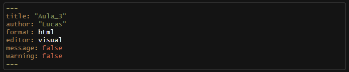
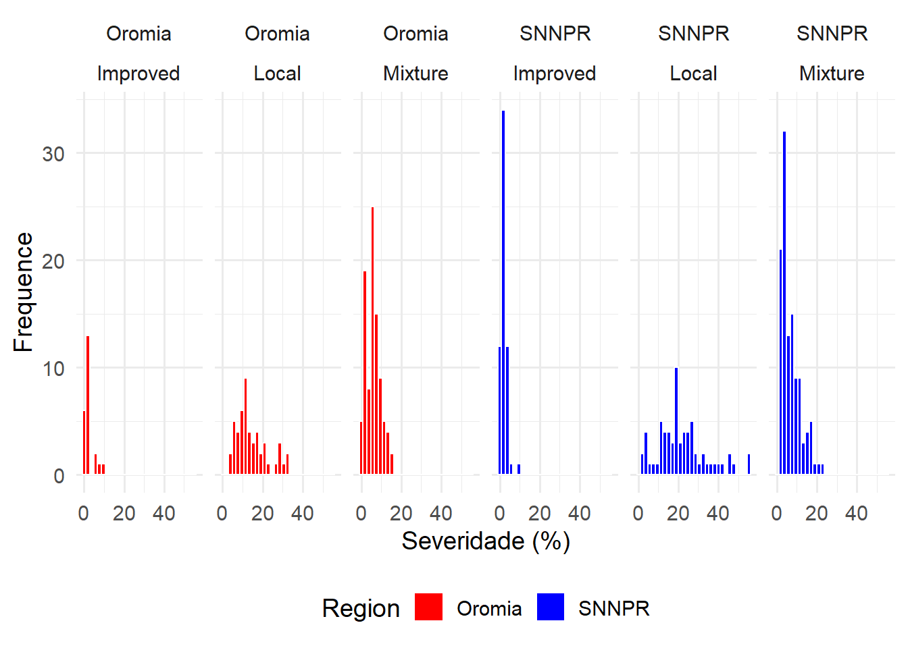
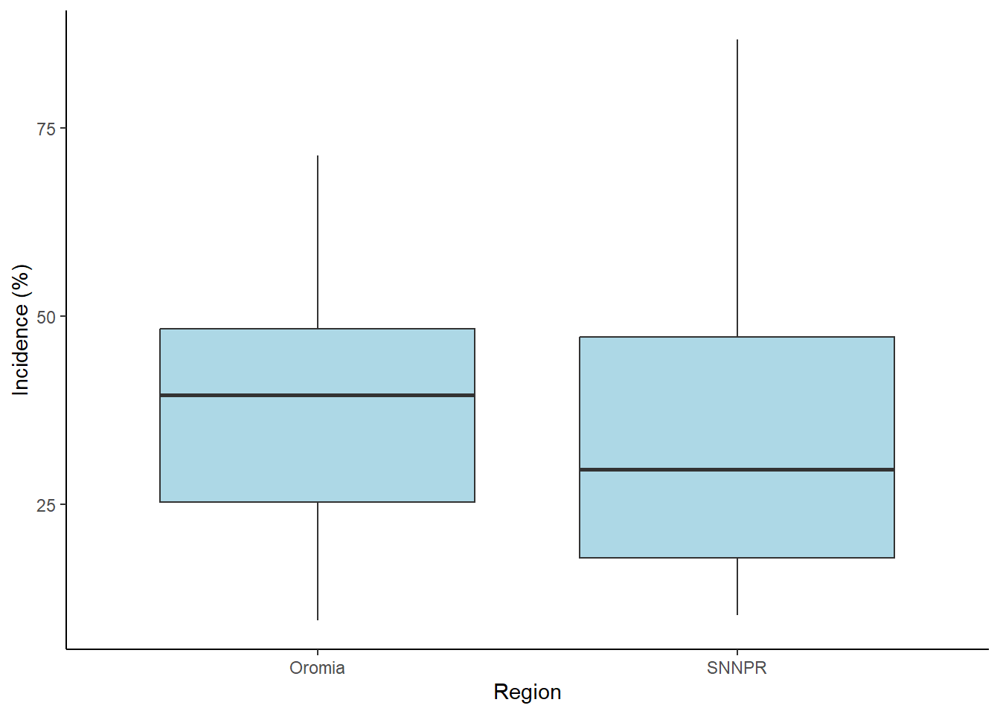
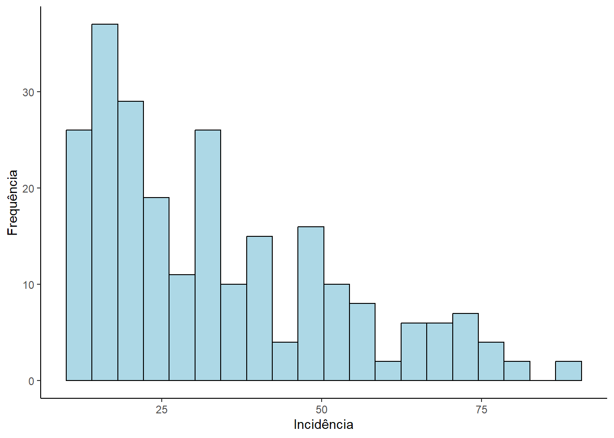
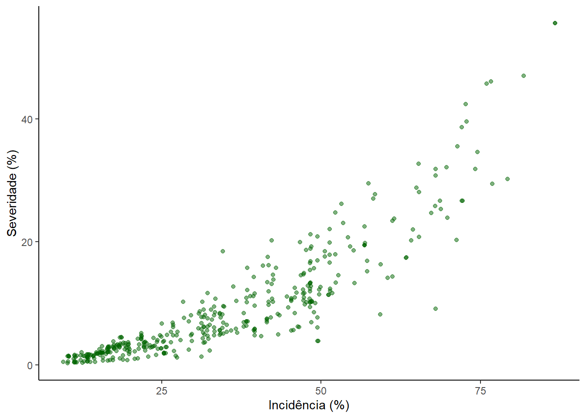
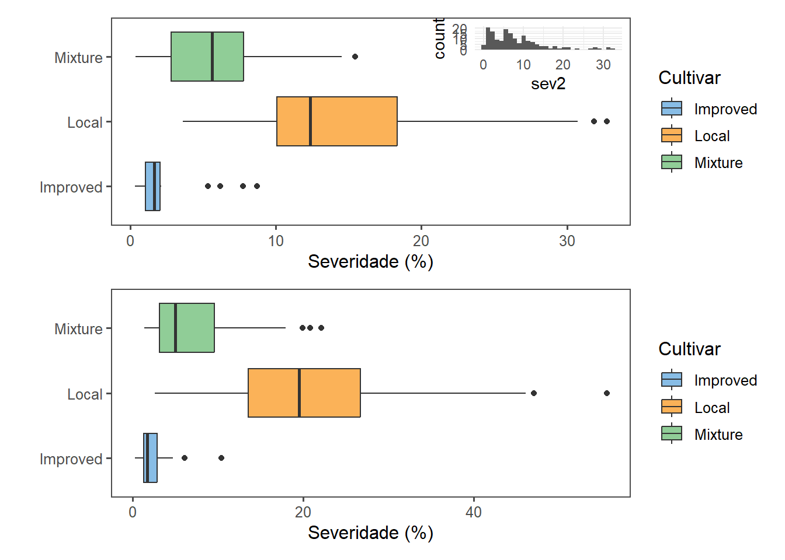
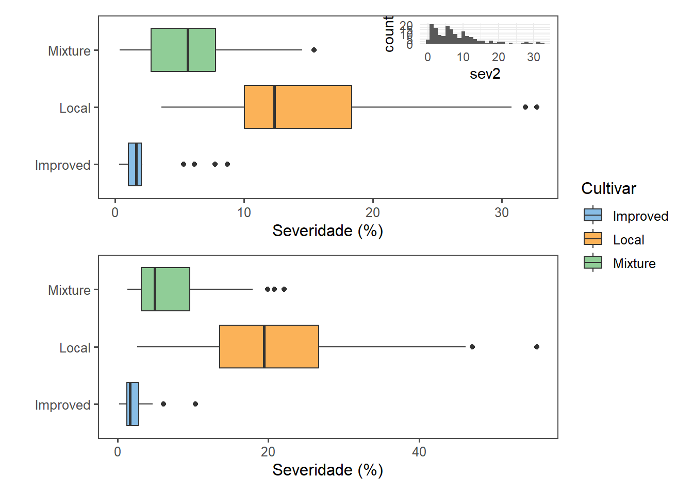
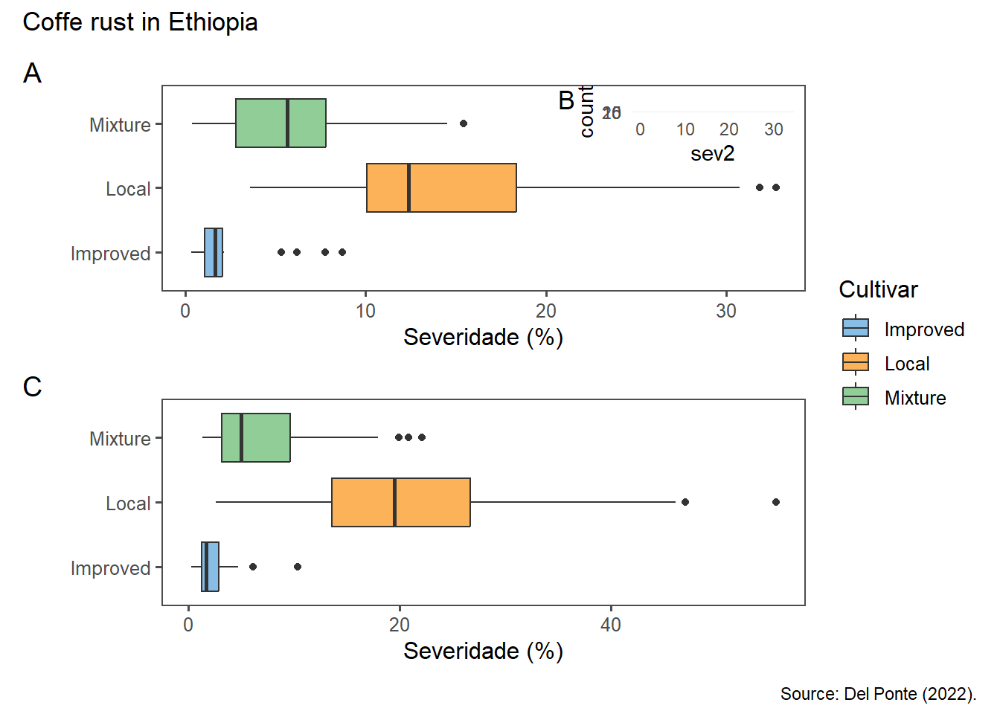

library(tidyverse)
library(patchwork)
library(ggthemes)Aula 3
Pacotes
Abaixo é apresentado o código para carregamento dos pacotes que são utilizados no decorrer do relatório. Para manipulação dos dados, o tidyverse, um pacote auxiliar para manipulação dos gráficos gerados, o patchwork e por último, o pacote ggthemes para acessar mais opções de themas para os gráficos criados com o pacote ggplot2.
O pacote tidyverse é basicamente uma biblioteca que, ao carregá-lo, automáticamente é carregado outros pacotes úteis para a manipulação e análise de dados como o dplyr e o ggplot2.
Configurações importantes sobre o chunk
O chunk é um local reservado para inserção de seus códigos e execução. Ao executá-lo, uma janela de resposta ao código é gerada e pode carregar mensagens e avisos que no relátório gerado após renderizar o código não é interessante. Para evitar a apresentação dessas mensagens e avisos indesejados no relatório, pode-se inserir os comandos apresentados no chunk e posteriormente o código de interesse, como a seguir:
Esse código dentro do chunk suprime menssagens e avisos apenas daquele chunk. Caso seja inserido diretamente no cabeçalho, como na figua abaixo, irá suprimir de todo o código.

Importando banco de dados
O banco de dados utilizado no decorrer deste relatório está sendo importado diretamente da Web em formato .csv. Para acessá-lo diretamente numa página da Web, clique aqui.
Os dados são referentes a observação da incidência e severidade da ferrugem do cafeeiro, em direfentes fazendas de duas regiões diferentes da Etiópia, Oramia e SNNPR. O banco de dados é composto por 13 colunas (variáveis dependentes e independentes) e 405 linhas (observações).
O código abaixo, utiliza da função ‘read_csv()’ do pacote readr (carregado automaticamente junto com o pacote tidyverse) para ler os dados em formato .csv, ao passo que os dados são armazenados no objeto nomeado como ‘cr’. A função utiliza como primeiro argumento o local do arquivo de dados. Atenção para inserir o local do arquivo entre aspas simples (’ ’) ou aspas duplas (” “). Outros argumentos da função podem ser acessados pela ajuda.
# Atribuindo banco de dados ao objeto 'cr':
cr <- read_csv('https://raw.githubusercontent.com/emdelponte/paper-coffee-rust-Ethiopia/master/data/survey_clean.csv')
# Buscando ajuda sobre a função:
?read_csv
# Visualizando o banco de dados:
cr# A tibble: 405 × 13
farm region zone district lon lat altitude cultivar shade
<dbl> <chr> <chr> <chr> <dbl> <dbl> <dbl> <chr> <chr>
1 1 SNNPR Bench Maji Debub Bench 35.4 6.90 1100 Local Sun
2 2 SNNPR Bench Maji Debub Bench 35.4 6.90 1342 Mixture Mid shade
3 3 SNNPR Bench Maji Debub Bench 35.4 6.90 1434 Mixture Mid shade
4 4 SNNPR Bench Maji Debub Bench 35.4 6.90 1100 Local Sun
5 5 SNNPR Bench Maji Debub Bench 35.4 6.90 1400 Local Sun
6 6 SNNPR Bench Maji Debub Bench 35.4 6.90 1342 Mixture Mid shade
7 7 SNNPR Bench Maji Debub Bench 35.4 6.90 1432 Mixture Mid shade
8 8 SNNPR Bench Maji Debub Bench 35.4 6.90 1100 Local Sun
9 9 SNNPR Bench Maji Debub Bench 35.4 6.89 1400 Local Sun
10 10 SNNPR Bench Maji Debub Bench 35.4 6.88 1342 Mixture Mid shade
# ℹ 395 more rows
# ℹ 4 more variables: cropping_system <chr>, farm_management <chr>, inc <dbl>,
# sev2 <dbl>Histograma
Com o intuito de explorar os dados que possuimos, uma boa maneira de começar a compreendê-los é por meio da visualização dos dados através de histogramas. Logo abaixo, foi criado histogramas para cada região e cultivar utilizando o pacote ggplot2. Dessa forma, fica mais fácil visualizar possiveis comportamentos/ padrões dos dados de severidade da doença em cada região e em cada cultivar simultaneamente. A “grosso modo”, é visível que os padrões de severidade da doença está mais relacionada às cultivares do que para às regiões. Por exemplo, as lavouras com cultivares melhoradas apresentaram intensidade da doença abaixo de 10%. Enquanto, a cultivar local (crioula) apresentou locais com a intensidade da doença acima dos 30%. Essas inferências só foram possível devido a vizualização dos dados por meio gráfico. Tal conclusão, não seria alcançada apenas observando os dados tabulados.
Observação sobre o código abaixo:
Para a criação de histogramas, na estética (função ‘aes()’), é definido apenas os valores para o eixo da abscissa (eixo x). Os valores do eixo das ordenadas (eixo y) são referentes à frequência em que cada observação ocorre dentro do vetor da abscissa definido na estética.
Ao final do código, o gráfico gerado foi salvo utilizando a função ‘ggsave()’ do pacote ggplot2, diretamente na pasta imagens.
cr |>
ggplot(aes(x = sev2, fill = region)) +
geom_histogram(color = 'white') +
facet_wrap(region ~ cultivar, ncol = 6) +
scale_fill_manual(values = c('red', 'blue')) +
theme_minimal(base_size = 14) +
theme(legend.position = 'bottom') +
labs(y = "Frequence",
x = "Severidade (%)", fill = "Region")
ggsave("imagens/hist_aula_3.png",
units = 'mm',
width = 18,
height = 9,
dpi = 300,
device = 'png')Sumarizando os dados
Utilizando a função summary()
Uma outra maneira complementar à exploração dos dados é por meio da sumarização dos dados. Isso pode ser feito utilizando a função ‘summary()’ do próprio pacote base do software R. A função requer um vetor com os valores que se deseja sumarizar. A expressão inserida como argumento na função se refere apenas aos dados de incidência da coluna inc do banco de dados cr. Como resultado é retornado os valores de mínimo, 1° quartil, mediana, média, 3° quartil e máximo. Veja:
summary(cr$inc) Min. 1st Qu. Median Mean 3rd Qu. Max.
9.50 19.43 32.50 34.89 48.20 86.71 Dessa forma, esse resumo dos dados nos diz um pouco de como eles estão distribuidos, ou seja, os valores de incidência estão distribuidos entre 9,5 a 86,71%, média e mediana de 34,89 e 32,5%, respectivamente. O 1° quartil (Q1) de 19,43%, cujo 25% dos valores estão abaixo de 19,43% de incidência e o 3° quartil (Q3) de 48,20%, cujo 75% dos valores estão abaixo de 48,20% de incidência.
Boxplot por região
Uma outra maneira de visualizar, os dados de incidência, é por meio de criação de gráficos Boxplot. O gráfico gerado é um resumo da mediana, 1° e 3° quartil, máximo e mínimo. O código abaixo cria boxplot distinguindo por região.
cr |>
ggplot(aes(x = region, y = inc)) +
geom_boxplot(fill = 'lightblue') +
labs(x = "Region",
y = "Incidence (%)") +
theme_classic()
De maneira rápida, é possível ver que a região SNNPR tem maior amplitude dos dados de incidência, mediana, representada pela linha horizontal central próximos dos 30%, valores do Q1 abaixo do 25%, Q3 abaixo de 50%. A região de Oramia, apresenta os dados mais compactados comparada a outra região, com mediana próximo de 40%, Q1 de aproximadamente 25%, Q3 próximo de 50%. A posição das caixas é um indicativo de como está a simetria das distribuição dos dados, se simétrico ou se assimétrico. A exemplo da região SNNPR, os dados apresentam uma distribuição assimétrica com os dados concentrados em incidências menores. Isso fica mais visível na histograma abaixo:
cr |>
filter(region == "SNNPR") |>
ggplot(aes(x = inc)) +
geom_histogram(bins = 20, color = 'black', fill = 'lightblue') +
labs(x = 'Incidência',
y = 'Frequência') +
theme_classic()
Sumarizando por região
Utilizando as funções “group_by” e “summarise” é possível calcular estatísticas como mediana e média. No código abaixo, as informações de mediana da incidência, incidência média e desvio padrão da incidência da ferrugem para cada cultivar em cada região pode ser obtida.
cr |>
group_by(cultivar, region) |>
summarise(inc_med = median(inc),
inc_mean = mean(inc),
sd_mean = sd(inc))# A tibble: 6 × 5
# Groups: cultivar [3]
cultivar region inc_med inc_mean sd_mean
<chr> <chr> <dbl> <dbl> <dbl>
1 Improved Oromia 15.7 17.4 6.76
2 Improved SNNPR 14.8 16.1 5.19
3 Local Oromia 49.6 52.0 8.08
4 Local SNNPR 54.8 54.5 17.6
5 Mixture Oromia 34.4 33.8 10.4
6 Mixture SNNPR 30.2 30.3 11.6 Esse é apenas um exemplo do que pode ser feito. Caso fosse de interesse do pesquisador entender qual é a incidência da doença para cada cultivar sem considerar a região, bastaria que o agrupamento, na função “group_by()” fosse feito apenas em relação a cultivar. Como também, poderia utilizar outra variável resposta do banco de dados para obter informações do comportamento das cultivares nas diferentes regiãos, apenas inserindo os dados da variável ou das variáveis dentro da função “summarise()”.
Relação entre severidade e incidência
Uma outra maneira de visualizar os dados, é por meio da plotagem de duas variáveis respostas como a severidade e incidência num gráfico de pontos.
cr |>
ggplot(aes(x = inc, y = sev2)) +
geom_point(color = 'darkgreen', alpha = 0.5) +
labs(x = 'Incidência (%)',
y = 'Severidade (%)') +
theme_classic()
Observamos que há uma correlação positiva entre as duas variáveis, como já esperado para severidade e incidência.
Criar subconjuntos
As vezes, quando seu banco de dados é muito grande, pode-se seguir com a análise apenas com parte desses dados. Nesse caso, filtrando apenas os dados que serão utilizados nas etapas seguintes da análise. Isso pode ser feito através da criação de subconjuntos. Veja:
Utiliza as funções ‘select( )’ e ‘filter( )’ do pacote dplyr para selecionar colunas e linhas, respectivamente.
cr_oromia <- cr |>
select(farm, region, cultivar, sev2) |>
filter(region == "Oromia")
cr_pr <- cr |>
select(farm, region, cultivar, sev2) |>
filter(region == "SNNPR")
cr_oromia# A tibble: 165 × 4
farm region cultivar sev2
<dbl> <chr> <chr> <dbl>
1 286 Oromia Mixture 7.63
2 287 Oromia Mixture 9.39
3 288 Oromia Mixture 1.30
4 289 Oromia Mixture 9.79
5 290 Oromia Local 18.5
6 291 Oromia Mixture 13.2
7 292 Oromia Mixture 5.60
8 293 Oromia Mixture 1.06
9 294 Oromia Local 17.6
10 295 Oromia Mixture 15.4
# ℹ 155 more rowsObs.: É importante chamar a atenção para seus dados originais. Quando esse processo é realizado, e o subconjunto é associado a um novo objeto, seu banco de dados original permanece intacto. Caso a associação do subconjunto seja feita sobre o nome do banco de dados original, este não mais se encontra-rá disponível no ambiente R para posteriores análises. No entanto, basta importar novamente seu banco de dados e estará tudo certo.
Visualizar os subconjuntos
Agora, segue-se a criação de gráficos para cada subconjunto gerado anteriormente.
p1 <- cr_oromia |>
ggplot(aes(cultivar, sev2,
fill = cultivar)) +
geom_boxplot() +
scale_fill_few() +
theme_few() +
labs(y = "Severidade (%)",
x = " ",
fill = 'Cultivar') +
coord_flip()
p2 <- cr_pr |>
ggplot(aes(cultivar, sev2,
fill = cultivar)) +
geom_boxplot() +
scale_fill_few() +
theme_few() +
labs(y = "Severidade (%)",
x = " ",
fill = 'Cultivar')+
coord_flip()
p3 <- cr_oromia |>
ggplot(aes(x = sev2)) +
geom_histogram() +
theme_minimal()
p1 <- p1 + inset_element(p3, left = 0.6, bottom = 0.6, right = 1, top = 1)Três gráficos foram gerados a partir dos subconjutos criados. E agora, utilizando o pacote patchwork vamos agrupar os gráfigos em apenas um:
p1 / p2
Acima a legenda ficou duplicada. No próprio pacote tem como resolver isso utilizando a função ‘plot_layout()’.
# ?patchwork # Utiliza para acessar ajuda do pacote e ver suas funções e argumentos.
(p1 / p2) +
plot_layout(guides = 'collect')
Adicionando identificadores nos gráficos utilizando a função ‘plot_annotatin()’ e salvando a imgem utilizando a função ‘ggsave()’ diretamente na pasta ‘Imagens’.
(p1 / p2) +
plot_layout(guides = 'collect',
axes = 'collect') +
plot_annotation(tag_levels = 'A',
title = "Coffe rust in Ethiopia",
caption = "Source: Del Ponte (2022).")
ggsave('imagens/aula3-pach1.png', width = 6, height = 8, dpi = 300)